방송통신기능사 (2004-10-10 기출문제)
1과목: 임의 구분
1. L[H]의 코일에 I[A]의 전류를 흘릴때 코일에 저장되는 에너지 W는 몇 [J] 인가?
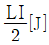
- LI[J]
- LI2[J]
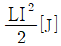
(정답률: 알수없음)

2. 사인파 교류를 식으로 나타낼때 필요없는 변수는?
- 평균전력
- 전류의 최대값
- 주파수
- 위상각
(정답률: 알수없음)
3. R - L - C 직렬회로에서 단자전압이 전류와 동상이 되기 위한 조건은?
- ωL2C2 = 1
- ω2LC = 1
- ωLC = 1
- ω = LC
(정답률: 알수없음)
4. "전자유도에 의하여 회로에 유도되는 기전력은 회로와 쇄교하는 자속이 증가 또는 감소하는 정도에 비례한다." 와 관계되는 법칙은?
- 패러데이의 법칙
- 렌쯔의 법칙
- 앙페에르의 오른 나사 법칙
- 비오 - 사바르의 법칙
(정답률: 알수없음)
5. 투자율 μ, 자속밀도 B[Wb/m2]의 자장 중에서 m[Wb]의 자극이 받는 힘[N]은?
- μmB
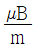
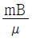
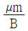
(정답률: 알수없음)
6. 반지름 r[m], 권수 N의 원형코일에 I[A]의 전류를 가했을 때 코일중심의 자장의 세기는 얼마인가?
- NIr[AT/m]
- 2NIr[AT/m]
- NI/r[AT/m]
- NI/(2r)[AT/m]
(정답률: 알수없음)
7. 다음 중 부성저항(Negative resistance) 특성을 나타내는 소자는?
- 가변 용량 다이오드
- 터널 다이오드
- 셀렌 정류기
- 점 접촉 다이오드
(정답률: 알수없음)
8. 수정 발진기는 어떤 효과를 이용한 것인가?
- 홀효과
- 광전효과
- 압전효과
- 제에백효과
(정답률: 알수없음)
9. 40㏈의 증폭율을 갖는 증폭기에서 100㎷의 입력신호를 인가할 때 출력신호는?
- 4V
- 0.4V
- 1V
- 10V
(정답률: 알수없음)
10. 다음 회로의 발진주파수는? (단, C1 = 300㎊, C2 = 300㎊, L = 50mH)
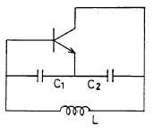
- 58[㎑]
- 116[㎑]
- 29[㎑]
- 232[㎑]
(정답률: 알수없음)
11. Vc = 30cosωct[V]의 반송파를 Vs = 10cospt[V]의 신호파로 진폭변조 했을 때 이 때의 변조도는 몇 [%] 인가?
- 25
- 33.3
- 43.3
- 50
(정답률: 알수없음)
12. 정현파는 어떠한 매개체를 이용하여 다양한 방법의 변조를 시도하는데 이에 해당되지 않는 방식은?
- 진폭변조
- 위상변조
- 반송파변조
- 주파수변조
(정답률: 알수없음)
13. 다음 중 평행판 콘덴서의 용량을 크게하는 방법이 아닌 것은?
- 극판의 간격을 작게한다.
- 극판의 두께를 크게한다.
- 극판의 면적을 크게한다.
- 극판간의 유전율을 큰 것으로 한다.
(정답률: 알수없음)
14. 다음 중 전력효율이 가장 좋으며 발진기에 사용되는 전력증폭회로는?
- A급
- B급
- AB급
- C급
(정답률: 알수없음)
15. 1[㎌] 커패시터 3개를 직렬로 연결했을 때 합성용량은 몇 [㎌]인가?
- 0.3
- 0.333
- 1
- 3
(정답률: 알수없음)
16. 중앙처리 장치(CPU)에 해당 되지 않는 것은?
- 제어 장치
- 연산 장치
- 주기억 장치
- 입출력 장치
(정답률: 알수없음)
17. 다음 2진수를 16진수로 바꾸면?
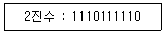
- 2AE
- 3AE
- 2BE
- 3BE
(정답률: 알수없음)
18. 그림과 같은 논리회로는?
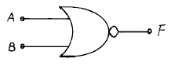
- AND gate
- OR gate
- NOT gate
- NOR gate
(정답률: 알수없음)
19. 다음 회로가 나타내는 논리 연산 종류는?
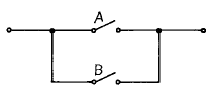
- AND
- OR
- NOT
- NAND
(정답률: 알수없음)
20. 어셈블리 언어로 작성한 프로그램을 기계어 프로그램으로 번역하는 프로그램을 무엇이라 하는가?
- 어셈블러(assembler)
- 트랜스레이터(translator)
- 컴파일러(compiler)
- 기계어
(정답률: 알수없음)
2과목: 임의 구분
21. 플로우 차트(Flow chart)의 3대 기본형이 아닌 것은?
- 원형
- 직선형
- 루우프형
- 분기형
(정답률: 알수없음)
22. 개인용 컴퓨터의 보조기억장치로 많이 사용되고 휴대가 간편한 기억장치는?
- 플로피 디스크(Floppy Disk)
- 자기 코어(Magnetic Core)
- 자기 테이프(Magnetic Tape)
- 자기 드럼(Magnetic Drum)
(정답률: 알수없음)
23. 입력자료 중에 쓰지 않는 일부분의 내용을 지울 때 사용하는 연산은?
- MOVE
- Complement
- AND
- OR
(정답률: 알수없음)
24. 다음 중 프로그램을 한 줄씩 읽어서 해석 및 실행하는 번역기는?
- 로더
- 컴파일러
- 인터프리터
- 어셈블러
(정답률: 알수없음)
25. 컴퓨터 시스템의 하드웨어, 소프트웨어, 펌웨어에 대한 비교 설명으로 적합하지 않은 것은?
- 하드웨어는 기계적이고 물리적인 시스템으로서 중앙처리장치, 기억장치, 입출력 장치 등으로 구성된다.
- 펌웨어는 소프트웨어적인 특성과 하드웨어적인 특성을 갖으며, 일반적으로 ROM에 있는 마이크로프로그램을 가리킨다.
- 입출력 장치, 연산장치 등의 고속 제어가 필요한 경우에는 펌웨어로 대체하는 경향이 있다.
- 소프트웨어를 펌웨어로 변환하면 속도가 느려지며, 하드웨어를 펌웨어로 변환할 경우에는 가격이 높다.
(정답률: 알수없음)
26. CATV의 기대효과로 가장 적합하지 않은 것은?
- 지역 정보화의 초석이 되는 뉴미디어의 역할을 담당하게 된다.
- 지역 주민간의 유대감을 강화할 수 있다.
- 지역간의 격차를 없애고 지방의 균등한 발전을 이루는데 기여한다.
- 전국적 대중을 대상으로 동시적 광고 효과를 높일 수 있다.
(정답률: 알수없음)
27. CATV 방송국 위치로 가장 적당한 곳은?
- 교통이 편리한 전철지역
- 방송국 급전이 용이한 변전소지역
- 가입자가 분포된 대도시지역
- 방송파 수신이 용이한 산간지역
(정답률: 알수없음)
28. 광통신시스템에서 사용하는 광소자가 아닌 것은?
- LD
- LED
- APD
- LNA
(정답률: 알수없음)
29. CATV 전송망에 사용되는 다음의 기기 중 간선망에 사용되고, 전송로의 신호손실을 보상하며, ASC/AGC 등의 기능을 가진 고품질의 증폭기는?
- TA(Trunk Amplifier)
- TO(Tap-off)
- EA(Extender Amplifier)
- DA(Distribution Amplifier)
(정답률: 알수없음)
30. 공중파로 수신된 TV신호를 중간 주파수로 변환하여 영상 및 변환 증폭하는 수신용 기기는?
- 신호처리기(SIGNAL PROCESSOR)
- RF 복조기(RF DEMODULATOR)
- 분파기(SPECTROSCOPE)
- VDA(VIDEO DISTRIBUTE AMPLIFIER)
(정답률: 알수없음)
31. CATV 에서 보안기의 역할은?
- 외부잡음의 유입을 차단한다.
- 도시청 방지를 위해 설치한다.
- 기후변동에 따른 케이블 보호용이다.
- 선로 계통에 생긴 이상전압이 CATV 시설로 진입하는 것을 방지한다.
(정답률: 알수없음)
32. 항상 일정한 전압과 주파수를 지닌 안정된 전원을 공급하고 바이패스(bypass)기능과 백업 밧데리(backup-battery)를 내장하여 무정전 기능을 갖추고 있는 장비는?
- 인버터(Invertor)
- 무정전전원공급장치(UPS)
- 컨버터(Convertor)
- 정류기(Rectifier)
(정답률: 알수없음)
33. 증폭기의 입력측 T.P(테스트 포인트)에서 측정한 레벨값이 채널 4에서 51[dB㎶], 채널 54에서 47[dB㎶]이었다면 실제의 RF입력 신호레벨값은? (단, T.P 손실값은 -30[dB]임)
- 채널 4 : 21[dB㎶], 채널 54 : 17[dB㎶]
- 채널 4 : 51[dB㎶], 채널 54 : 47[dB㎶]
- 채널 4 : 77[dB㎶], 채널 54 : 81[dB㎶]
- 채널 4 : 81[dB㎶], 채널 54 : 77[dB㎶]
(정답률: 알수없음)
34. 우리나라 아날로그 컬러 TV의 표준방식인 NTSC 방식에 관한 설명으로 알맞는 것은?
- 수평 주사선수는 635개 이다.
- 채널 대역폭은 6[㎒] 이다.
- 영상신호 대역폭은 5.5[㎒] 이다.
- 화면의 종횡비는 5 대 4 이다.
(정답률: 알수없음)
35. CATV용 분기기에서 분기단자에 신호를 인가시 입력레벨과 간선의 출력단자간에 출력레벨과의 차이를 나타내는 것은?
- 결합손실
- 분배손실
- 역결합손실
- 삽입손실
(정답률: 알수없음)
36. RF신호를 기저대(baseband)의 영상 및 음성신호로 변환하는 장치는?
- 변조기
- 복조기
- 신호처리기
- 결합기
(정답률: 알수없음)
37. 전송선로의 끝을 개방하고 임피던스를 측정하니 Zf 이고 끝을 단락하고 임피던스를 측정하니 Zs 이었다. 이 선로의 특성 임피던스 Zo 값은?
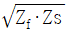
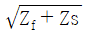
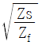
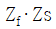
(정답률: 알수없음)
38. 광통신용 전송로에 사용되는 광케이블의 특징이 될 수 없는 것은?
- 전송손실이 적다.
- 무제한으로 구부릴 수 있다.
- 가늘고 경량이다.
- 유도나 누화가 없다.
(정답률: 알수없음)
39. 다음 중 CATV에서 연장 증폭기가 사용되는 곳은?
- 분배선로나 소규모 네트웍에서 케이블의 손실을 보상하여 전송로를 연장시켜 주는 곳
- 간선에 위치하여 신호의 손실을 보상하고 AGC 기능이 필요한 곳
- 간선을 2개 이상의 지선으로 분배하여 신호의 손실을 보상하는 곳
- 간선으로 부터 가입자에게 분기되는 곳
(정답률: 알수없음)
40. 방송신호에 사용하는 기본단위중 IRE와 전압[V]의 관계를 바르게 나타낸 것은?
- 1V = 100 IRE
- 1V = 120 IRE
- 1V = 140 IRE
- 1V = 160 IRE
(정답률: 알수없음)
3과목: 임의 구분
41. 방송전송선로의 측정기로 거의 사용하지 않는 것은?
- 스펙트럼 분석기
- 레벨메타
- IC 테스터
- 전계강도 측정기
(정답률: 알수없음)
42. 종합유선방송의 가입자 댁내 인입용 케이블과 기기간의 접속에 사용되는 커넥터는?
- F형
- FC형
- FT형
- FS형
(정답률: 알수없음)
43. 위성 방송용 접시형 안테나의 이득을 증가시키는 방법 및 특성이 아닌 것은?
- 안테나의 직경을 작게한다.
- 안테나의 효율을 증가시킨다.
- 안테나의 수신 허용각을 유지시킨다.
- 전파의 파장은 작을수록 이득은 커진다.
(정답률: 알수없음)
44. 평면(벽걸이) TV용 화면으로 많이 사용되는 소자는?
- LED(Light-Emiting-Diode)
- PDP(Plasma Display Panel)
- ELP(Electro Luminescence Panel)
- CRT(Chathode Ray Tube)
(정답률: 알수없음)
45. 다음에서 광섬유에 관한 설명으로 틀린 것은?
- 굴절율의 분포에 따라 계단형, 언덕형이 있다.
- 전송모드에 따라 단일모드, 다중모드가 있다.
- 다중모드는 코어의 크기가 크므로 손실이 적다.
- 단일모드는 대용량 시스템에 사용된다.
(정답률: 알수없음)
46. CATV 사업영역 중 유선분배망이나 공중파를 통하여 직접방식으로 시스템운용자에게 프로그램을 공급하는 사업자는?
- 방송국운영자
- 프로그램공급자
- 전송망사업자
- 댁내설비공사업자
(정답률: 알수없음)
47. 방송의 공적책임. 공정성, 공익성을 실현하고, 방송내용의 질적 향상 및 방송사업에서의 공정한 경쟁을 도모하기 위하여 방송위원회를 두는데 그 구성원인 방송위원은 누가 임명하는가?
- 대통령
- 국무총리
- 문화관광부장관
- 정보통신부장관
(정답률: 알수없음)
48. 전기통신설비의 기술기준에 관한 다음 설명 중 틀린 것은?
- 저주파수라 함은 300[Hz]미만의 전자파를 말한다.
- 음성주파수라 함은 300[Hz]이상 3400[Hz]이하의 전자파를 말한다.
- 가청주파수라 함은 10[Hz]이상 5000[Hz]이하의 전자파를 말한다.
- 고주파수라 함은 3400[Hz]이상의 전자파를 말한다.
(정답률: 알수없음)
49. 정보통신공사업자가 아닌 자가 시공할 수 있는 경미한 공사는?
- TV 셋트의 구내설치공사
- 방송국간 중계전송 선로공사
- 공청 안테나(MATV용)의 설치 및 접지공사
- 전자교환 시설공사
(정답률: 알수없음)
50. 유선방송시설중 전송 및 선로설비가 전력유도에 의한 장해가 없도록 유도방지 조치를 취하여야 할 상시 유도위험종전압의 제한치는 몇 [V] 이상인가?
- 15
- 60
- 100
- 650
(정답률: 알수없음)
51. CATV용 분배기의 유휴분배단자는 사용회선에 영향을 미치지 않도록 몇 [Ω]으로 종단시키는가?
- 25
- 50
- 75
- 100
(정답률: 알수없음)
52. 방송법의 궁극적인 목적으로 맞는 것은?
- 통신의 효율적인 관리
- 통신 기술의 발전 촉진
- 정보화 사회의 촉진
- 공공 복지 증진에 기여
(정답률: 알수없음)
53. 방송에서 변조전의 정보를 포함하고 있는 주파수대역을 무엇이라고 하는가?
- 기저대역
- 방송대역
- 통과대역
- 전송대역
(정답률: 알수없음)
54. CATV 가입설비 설치공사에서 보안기 설치시 유의사항으로 맞는 것은?
- 전력선과는 가급적 근접시킨다.
- 가능한 비를 맞는 곳에 설치한다.
- 접지는 전혀 할 필요가 없다.
- 입출력 단자는 방수 콘넥타를 사용한다.
(정답률: 알수없음)
55. 종합유선방송용 구내 전송선로설비에 사용되는 동축케이블의 정재파비는 얼마 이하이어야 하는가?
- 1.0
- 1.2
- 1.5
- 2.0
(정답률: 알수없음)
56. 방송의 공적 책임에 해당되지 않는 것은?
- 방송은 인간의 존엄과 가치 및 민주적 기본질서를 존중해야 한다.
- 방송은 범죄 및 부도덕한 행위나 사행심을 조성해서는 안된다.
- 방송은 건전한 가정생활과 아동 청소년의 선도에 영향을 끼치는 음란, 퇴폐 또는 폭력을 조장해서는 안된다.
- 방송은 국민의 화합과 민주적 여론형성에 이바지해서는 안된다.
(정답률: 알수없음)
57. 방송위원회의 구성 인원은?
- 6명
- 7명
- 8명
- 9명
(정답률: 알수없음)
58. CATV 분기기에 있어서 손실의 종류가 아닌 것은?
- 분기손실
- 삽입손실
- 역결합손실
- 외부손실
(정답률: 알수없음)
59. 방송국에서는 정기적으로 방송설비의 각종 방송신호에 대하여 측정· 시험하여 그 결과를 기록· 관리하여야 한다. 다음 중 시험, 측정 항목에 해당되지 않는 것은?
- 반송파의 주파수 편차
- 스퓨리어스
- 혼변조도
- 회로정수
(정답률: 알수없음)
60. 정보통신공사업에 규정한 감리원의 등급은?
- 특급-고급-중급-초급
- 상급-중급-하급-초급
- 1급-2급-3급-별종
- 특별급-일반급
(정답률: 알수없음)
W = 1/2 * L * I^2
여기서 L은 코일의 인덕턴스를 나타내며, 단위는 헨리(H)입니다. I는 전류를 나타내며, 단위는 암페어(A)입니다.
따라서, 보기에서 정답인 ""은 코일에 저장되는 에너지를 나타내는 공식인 1/2 * L * I^2을 나타내는 것입니다.